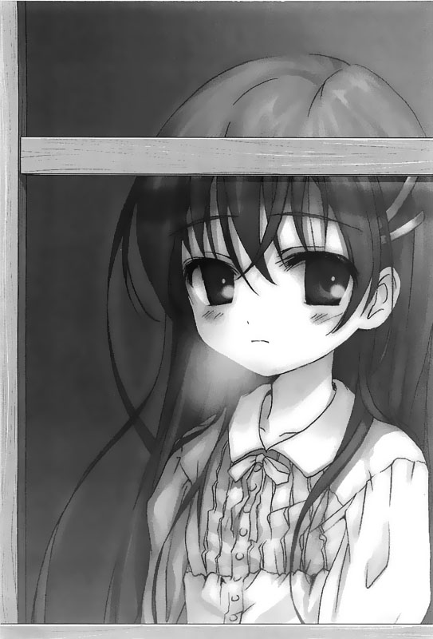

回到顶部

前往底部

05.ラムネ79's (ラムネより)


「……我的身体确实是从小就不太好……」
即使如此，这对我的小学生活并没有构成任何影响。我仍旧每天上课，暑假也曾经一天到晚在外面跑，玩得整个人全身都晒成了古铜色。
当时的我还可以每天踩着脚踏车踏板，赶着去市立游泳池游泳。我喜欢运动后披着一身淋漓的汗水，伫足在夕阳西下的归途中聆听蝉鸣，同时呼吸着自己身上从游泳池中带回来的消毒水味。
某一年六月。当时我才刚升上国中不久，而学校就要开始在下月进入游泳课的季节，然而，就在我为了游泳课订购泳衣的隔天，我第一次住进了医院。而那时的记忆现在也依然清晰的烙印在我的脑海里。
那是第一学期的期中考前，初来的梅雨连绵不断，使得那天格外寒冷。大雨滂沱的天空呈现一片白蒙蒙的景致……
起初，学校的同学每天都会来医院看我。在我出院以后，她们更是每个礼拜都到我家里来玩。她们每天帮我带来课堂上的笔记、讲义，还有老师帮我们出的作业。她们会告诉我每天班上发生的大小事，还会带着喜孜孜的表情让我针对学校里的事情问东问西的。
「可是……这也只有刚开始那一段时间而已。」
夏天过了。秋天会来，冬天去。这段时间里我又再次住进了医院，然后出院，接着过着每天到医院报到的生活。
之后，我再一次住进医院时，就彻底被学校抛弃、被社会隔离了。那些曾经在班上一起嬉笑打闹的同学，后来渐渐成了在路上碰了面，点了头便擦身而过的普通朋友。
在我住院以前，她们都会亲昵的直呼我的名字。然而，渐渐地，我在她们口中变成区隔彼此距离的「你」，最后甚至疏远互不相识的陌生人。
看来，每当季节更替，我的存在也一点一滴的从她们的记忆消失了……
「……看到我，好像会让她们觉得不太舒服吧。」
——对于她们这些每天都得日复一日地过着正常生活的人们来说……
所以……我就这么一点一滴地被她们从自己的记忆中抹去了……
……数年之后，我经历了几度住院、出院的日子，现在已经没有任何人来探病了。我想，这也许就是我从所有曾经熟识之人的记忆中完全消失的时候吧。
我们家从习惯了独栋洋房搬入了一间公寓，母亲同时开始到邻近的一间便利店兼差。而这些改变究竟代表了什么样的意义，其实我在当时就已经发现到了——我的医疗费、住院费绝不是一笔小数目。
事实上，钱是医院里头的病患每天茶余饭后的话题。在住院的过程中，我也渐渐知道，我们这些病患在意自己带给家人的负担，远远超过他们的想象。
我们的新家是一间有点破旧的木造房屋。这里不但平数小，距离父亲上班的地点也得花上两个小时的通动时间。然而，距离我的医院步行却只要短短的三分钟。
我们初次来到这间公寓的时候，父亲对着这间破旧而狭小的公寓说：「这里空气很好，住起来应该也很舒服吧。」他说话时脸上露出了笑容，而母亲也同样微笑着应和。
也许是为了我的身体，父母在我房里装了一架空调。而这是我房间里独有的，其他房间里并没有同样的设备。
自从母亲开始到便利店兼差以后，她常常会带着店里的可乐饼和炸薯条回来，说这是店里头卖剩的，然后面带笑容的跟我一起挤在狭窄的房间里头分着吃。
——这对我来说……其实是一种非常沉重的负担……
他们为了我的种种付出和体贴，对我来说只是一种煎熬。比起因他们为我而做出的事情感到高兴和感谢，我更深深觉得自己实在太对不起他们了。
「都是你的错！」
「——也许……我其实非常渴望听到他们这么狠狠责备我一次吧……」
我希望他们能够多给我一些压力，因为他们的温柔会造成我的煎熬，甚至会让我对于自己的无能为力感到焦虑和愤怒。
如果这个世界上真的有神的存在，那么我希望他早点把我的病治好。又如果这其实只是一个遥不可及的奢求，那么我会希望自己早点离开这个世界，因为在别人逐渐将我从他们的记忆中抹去，让我觉得自己正缓缓地从这个世界上消失的同时，父母的温柔反而让我时时刻刻不断地意识到自己的存在，意识到自己带给他们的麻烦。这样的煎熬实在太令人难以承受了。
我恨自己的无能，恨自己即便接受了别人温柔的对待，却连一丁点儿的回报都做不到。
这个世界上存在着许许多多的「不幸」，我诅咒着自己竟是受到这些「不幸」眷顾的其中一个。
也许就是在这样的命运之中，我才更应该展露笑容，表现出积极光明的一面。然而，残酷的是，我得面对的其实是我必须默默地将自己不怎么喜欢的炸薯条给一口一口地吃进肚子里去；残酷的是，父母亲好心为我装的空调，我却因为对他们感到惭愧，几乎不怎么开它。
外面飘着霏霏细雨。
「打从我第一次住院开始，这已经是第几个飘雨的季节了呢……」
我一个人站在窗边，遥望着漫步在上学途中的孩子们，他们转动着手中的雨伞，活泼地嬉闹着。此时的我已经度过了好几个不需要和人交谈的季节，好几个必须独自一个人面对的、白蒙蒙的梅雨季。
恍然间，我拉开抽屉，看到里头的教科书和参考书。我望着其中一本英文课本。这本课本在我国中一年级的期中考过后，就和我房间里的空调一样再也没有留下岁月的痕迹，几乎跟新买的一样。
「我的……时间是不是也同样静止在那个时候，不再流动了呢？」
